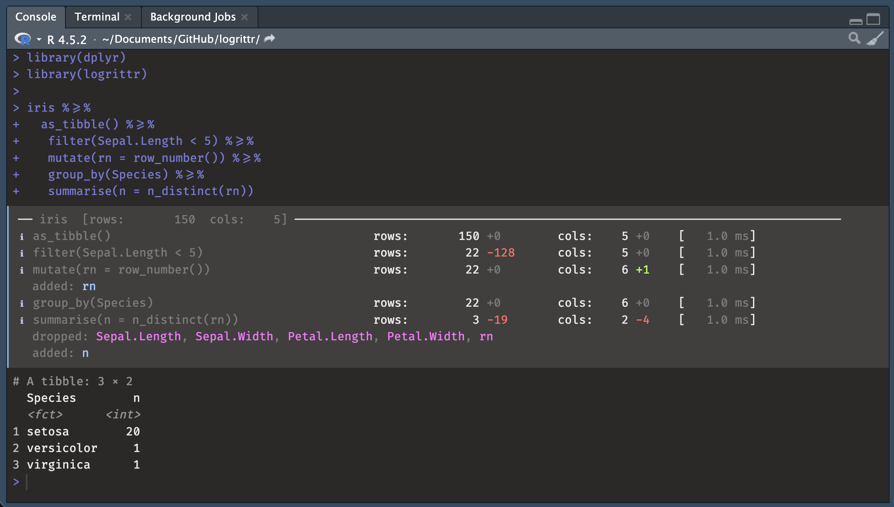

A logging pipe operator for dplyr and tidyverse data pipelines.
dplyrverbs are descriptive: let’s make them more verbose!

In SAS, every DATA step prints a log:
NOTE: There were 120000 observations read from WORK.SALES.
NOTE: 7153 observations were deleted.
NOTE: The data set WORK.RESULT has 112847 observations and 11 variables.R’s dplyr pipelines are silent. logrittr fills that gap with %>=%, a drop-in pipe that logs row counts, column counts, added/dropped columns, and timing at every step, with no function masking.
With Fira Code ligatures, %>=% renders as a single wide arrow visually similar to %>% with an added subline like a subtitle (sub-log).
Things happens:
NOTE: There were 120000 observations read from WORK.SALES.
NOTE: 120000 observations were deleted.
NOTE: The data set WORK.RESULT has 0 observations and 11 variables.
install.packages('logrittr', repos = 'https://guillaumepressiat.r-universe.dev')
# or from github
# devtools::install_github("GuillaumePressiat/logrittr")
library(logrittr)
library(dplyr)
iris %>=%
as_tibble() %>=%
filter(Sepal.Length < 5) %>=%
mutate(rn = row_number()) %>=%
semi_join(
iris %>% as_tibble() %>=%
filter(Species == "setosa"),
by = "Species"
) %>=%
group_by(Species) %>=%
summarise(n = n_distinct(rn))ℹ as_tibble() rows: 150 +0 cols: 5 +0 [ 0.0 ms]
ℹ filter(Sepal.Length < 5) rows: 22 -128 cols: 5 +0 [ 1.0 ms]
ℹ mutate(rn = row_number()) rows: 22 +0 cols: 6 +1 [ 0.0 ms]
added: rn
ℹ > filter(Species == "setosa") rows: 50 -100 cols: 5 +0 [ 0.0 ms]
ℹ semi_join(iris %>% as_tibble() %>=% rows: 20 -2 cols: 6 +0 [ 5.0 ms]
filter(Species == "setosa"), by = "Species")
ℹ group_by(Species) rows: 20 +0 cols: 6 +0 [ 0.0 ms]
ℹ summarise(n = n_distinct(rn)) rows: 1 -19 cols: 2 -4 [ 1.0 ms]
dropped: Sepal.Length, Sepal.Width, Petal.Length, Petal.Width, rn
added: n
# Switch to English, comma as thousands separator, wider labels
logrittr_options(lang = "en", big_mark = ",", wrap_width = 60)
# Back to defaults
logrittr_options(lang = "fr", big_mark = "\u00a0", wrap_width = 52)| Option | Default | Description |
|---|---|---|
wrap_width |
32 |
Max chars before step label wraps |
big_mark |
" " (thin space) |
Thousands separator |
lang |
"en" |
Display language: "fr" or "en"
|
tidylog?
tidylog is a really neat package that gives me motivation for this one. tidylog works by masking dplyr functions which can cause subtle conflicts with other packages.
Anyway this also was a moment for me to test a new programmer tool that is used a lot for programming at this time.
logrittr uses a custom pipe operator and never touches the dplyr namespace. Its console output is colorful and informative thanks to the cli package.
lumberjack
If you already know the lumberjack package, compatibility is available with logrittr (timings are approximates).
Calling logrittr_logger$new():
Like tidylog, logrittr only works with dplyr pipelines on R data.frames (in memory) and is not able to do so with dbplyr pipelines from databases (remote/lazy table).
Join cardinalities nicely done in tidylog are difficult to have from the pipe as join is already done, at this time we only show N row and N col evolution (before / after).
This package at this time is a proof of concept and may not evolve much. It depends of feedbacks.
with_logging() wrapper for |> compatibility (dream)loglevel option to mute sub-pipeline steps